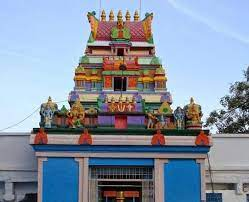

Chilkur Balaji Temple

- Chilkur Balaji Temple is situated in the picturesque village of Chilkur.
- It is about 30 kilometres away from Hyderabad.
- It is also called the VISA Temple, and sits prettily on the banks of the Osman Sagar Lake, near the Vikarabad Road.